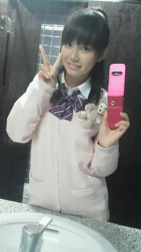
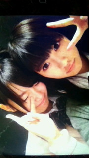
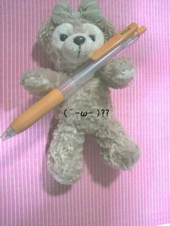
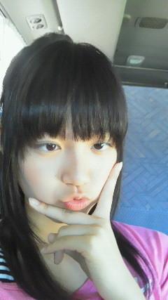
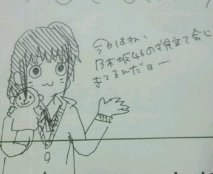
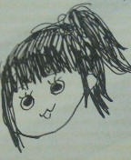

ひめたんが日記を書く時間だよ♪
長い。今日は長いです。
最初に。
昨日アップした「ひめたん(*ゝω・*)ノその4」が
デコメ貼れてなかったり
いこまっちが
いこまっちになってたり
ほんとに寝ぼけてました
ごめんなさいっっ
いつも遊びに来てくださって、ありがとうございます(*^^*)
いつもコメントありがとうございますっ!
「ひめたん(*ゝω・*)ノその３」までのコメント返し
いっくよー♪
 ぱぱまま目線かぁ〜お兄ちゃん目線ではだめかなぁ？
ぱぱまま目線かぁ〜お兄ちゃん目線ではだめかなぁ？
お兄ちゃんっ
ひめたんのお兄ちゃんになってくれるのー？
嬉しいっありがとうございます^з^!
ひめたんはブログ書くの初めて？
超→うまいコツを教えてくださいな
ブログのこつ=^・ω・^=ひめたん知りたいですよー
こつ...ではないけど
ひめたんって誰かにお話ししてるみたいに
日記書いてるんですよね♪
これが受け入れていただけたなら幸せですっ。+゜
ひめたんってもう来年の手帳買った(*ゝω・*)ノ？
ひめたん2011年9月～2012年12月の手帳を愛用しておりますよ
でもね、あんまり手帳マメに書くタイプじゃないからね
11月以降は真っ白になっとる(';ω;`)
来年からまた頑張って活用しようかなっ♪
ひなちまにあげたら？落としたんちゃうけど
インク切れたんじゃってｗｗｗ
ひなちま(樋口日奈chan)オレンジぺん欲しいみたいですねー
じゃひなちまにあげよっかな...
なーんて♪
ちゃんと持ち主にお届けしますよ(∀)わら
今でもキャラ弁作ってる？
お弁当っ
あさ時間がある時はまたキャラ弁作りたいな!
毎週土日は乃木坂46の活動ですか？
毎週土日は乃木坂の活動ですよ＼(^^)／
でもテストが近かったりなんやかんやで
おやすみするときも...
広島～東京間は遠いですねぇ
頑張りますよん♪応援ありがとうございます(*^^*)
てかひめたんって乃木どこ？の常識テストで1位だったし
実はテスト楽勝だったんじゃない？笑
いやいやめっそうもない!
テスト返しなんていらないですっっ
ひめたんの代わりに答案用紙受け取ってくれる人いないかなーあ('・・)...
ひめたんくまさん好きなの？
写真のシュリーメイもかわいいよ！！
ジャッキーちゃん、ダッフィーちゃんとシェリーメイちゃん
ケアベアもブーフも大好き(o>ω<o)/
テスト...もう終わったんかな？
テストの点を受け入れるの一緒に頑張りましょ☆ふぁいとー!
テスト終わったんですね。お疲れ様。
出来は？いい点取れそう？
テスト終わりましたよん
出来は...出来は...
国語・社会は自信ありますよ(^・u・^)v
あとはスルーして下さいっと★わら
まさか、解らない所に、【ひめたん始動】って書いてないよね。
マイナスされたりしたら責任感じます。
【ひめたん始動】そんな問題は残念ながら出なかったです...
時事問題に登場しちゃうくらいに
頑張らんとねっ
新福話術のご提案ありがとうございますっ
そうそう!
おさるさんに仲間ができましたのでね('`)
今度ご紹介します♪
公式サイトの写真新しくなったね。
公式サイトの個人写真は
残念ながら似顔絵ってわけにはいかないみたいですね!
てゆか交渉する前に変わっちゃったのよーお(>_<)
お願いしたら、応援してくださいますか？
応援しましょうか？わら^^新しいコーナーもただいま企画中!
ひめたんの写メもっと載せてほしいな！
自撮り研究がんばってね(nﾟ∀ﾟ)n
ひめたんの写メもっとみたいー♪
なんてありがたきお言葉っ。(p>∧<q)。!!!
自撮り頑張りますね!
とりあえずこの前撮った写メ貼ってみまそ

まだまだです...
背景トイレだしっわら
ひめたんっっ(o>ω_<)お役に立てたかな？(*・v・*)
ほんとに助かりました∩^ω^∩
みなさんのおかげだよー♪
ありがとうございました!
ほかにも
「応援してるよー!」
「大好きよー!」←わーお
みなさん本当にありがとうございますっ!
あいらびゅっ
(^・ω・^)
ひめたん
ひめたんの登場ですこんばんわーあ('＞ω＜`)/
ホームページの個人写真が変わってたっ!!!
ピンクのカーディガン着させてもらって嬉しいです♪
ひめたん乃木坂の制服お気に入りなのーっ
よかったらホームページにも遊びに来てね＼(^^)／
「乃木坂って、どこ？」って叫んで待ってるからね
えー今日は
この前の撮影のときのことお話しさせて下さいな

ひめたん＊みゅうみゅう
みゅうみゅう好ーき !
!
この前の撮影はねー
かっこいい表情の作り方をいこまっち(生駒里奈chan)にレクチャーしてもらった!
ふわふわしてるオフないこまっち
カメラの前に立った時のめーっちゃクールないこまっち
惚れちゃいますなっ(o>ω<o)
んーそれからね
いくたどん(生田絵梨花chan)ちーちゃん(斉藤ちはるchan)と
乃木坂中３組でお勉強会しましたっ
あとで写メ撮ろうって言ったまま忘れてた...
まっまたの機会をお楽しみに(∀)
あしゅりん(齋藤飛鳥chan)とかなーちゃん(西野七瀬chan)とか
いきなりぎゅーってしてきて可愛いかったよっ!
いつものことだけどね♪
うんっ
エピソード書き出すと止まりませんっ!!!!!
ほかのメンバーともいっぱいお話ししたのですが
もっと報告したいことあるのですが
眠たくなってきたーあ。最近夜更かししすぎたんかな。
ひめたん寝てもいーい?
('・ω・`)
ひめたん
こんばーんは(^^)/"ひめたんこと中元日芽香ですっ
テスト終わりましたー(o>ω<o)v
応援して下さったファンのみなさん、ありがとうございましたっ!!
メンバーのみんなありがーとう♪♪
というわけで
メンバーみんなの日記とか
みなさんからのコメントなんかをじっくり読んでるなう☆
ひめたんはぴんく好きですよー♪♪何でわかったのーっ(*/ω＼*)?
最近好きなキャラクターはねっくまのがっこうって絵本のジャッキーちゃん
りんご好きです今でもっ!
明日からテストー?!ひめたん応援するの得意なの(∀)ふぁいとー♪♪
ひめたんのお弁当の写メ近々載せますね☆お楽しみ!
昨日の日記に書いてた「最近のビッグニュース」
ひめたんのこと助けてくださった方ありがとうございます!!
結局テストに出たのはね...
①世界人口○○人達成
②○○○
③タイの○○○○○○川で洪水
④○○○○ベイスターズ
⑤コンピュータ○○○○攻撃
みなさんは５点もらえますかなー(ω)?
...!
②は「TPP」でした(*-ω-)
みなさんの言う通りですね♪♪
えーここで
オフィシャルブログという公共の場でありながら
落とし物の持ち主を探したいと思いますっ('・ω・`)

オレンジボールペン!
あのねこれね
日曜日の取材の時にひめたんがペンケースの口を開けてテーブル置いとったんよ
そしたらメンバーの誰かがオレンジペン入れてくれたみたい(∀)わら
ひめたん月曜日に学校でびっくりしたーよ!!!
誰のー??
ブログみて「私のだ!」って思ったら申告してね☆
３ヶ月間申告がなかったら
ひめたんブログ視聴者さんプレゼントにしちゃうかもよー(`・ω・')??
ひめたん
こんばーんは(^^)/"ひめたんです!
そうそうっ
お見立て会のときに腹話術して広島弁でお話ししてたおんなのこです♪♪

昨日の初日記
たくさんの方がコメントしてくださって、ありがとうございます゜。(p>∧<q)。゜゜
それから写メ貼れてないよーって教えてくださった方
本当に助かりました(^^)
昨日はパソコンからアップしたんだけどね
ひめたん家はパソコンに詳しい人いないからっ
我が家はてんてこまいでした('・ω・`)←
そんなひめたんですが
これからも乃木坂みんなと一緒に成長させていただきますっ♪
ぱぱまま目線で温かーく見守っていてくださいな(ω)
告白会チームお疲れ様ー!
ひめたんも乃木坂メンに告白してほしーい(*/ω＼*)
告白会参加してきた方
メンバーから何て言われたのかな...★
ちなみにひめたんは今日ね
みゅうみゅう(若月佑美chan)とメールした日＊
ねーみゅうみゅうっ!
さてひめたんは中学３年生
テスト週間なうっw(°O°)w
ちーちゃん(斉藤ちはるchan)一緒に頑張ろーう!
社会のテストで毎回「時事問題」が５問ほど出題されるので
最近のビッグニュースを復習しております(`・ω・)ゞ
ビッグニュースビッグニュース、ビッグ...
('・・`)
へるぷみーい!!!!!!!!!
わら
ひめたん
若干遅刻気味ではありますが…
祝★ブログ初登場(`・ω・')ゞ
ついに始まりましたー拍手っ!
ずっと伝えたかったことがあります!
お見立て会に遊びに来てくださった方、
お手紙やプレゼントや素敵なメッセージをくださった方、
そして、そしてそして
乃木坂46ブログデビューを楽しみしてくださった方、
本当にありがとうございました!!!
それでは自己紹介しまーす
／
乃木坂１の甘えん坊で寂しがり屋な
ひめたんこと中元日芽香です!
よろしくお願いします♪
＼


なーちゃん(西野七瀬画伯)作
「似てるー!」って評判だったからおそらくこんな顔してます♪わら
乃木坂46のホームページの写真こっちとかえてもらおっかな…
ちょっとスタッフさんに交渉してみますね(*/ω＼*)ぷ
んーこんな感じで更新頑張るのでこれからも
遊びに来て下さい∩^ω^∩
それでは短い時間でしたが
ひめたんの日記読んでくださって
ありがとうございましたっ(*^^*)/"
これからも
努力と感謝の気持ちを忘れず
精一杯頑張ります!
よろしくお願いします(^^)!
おやすみなさいっ★☆
ひめたん